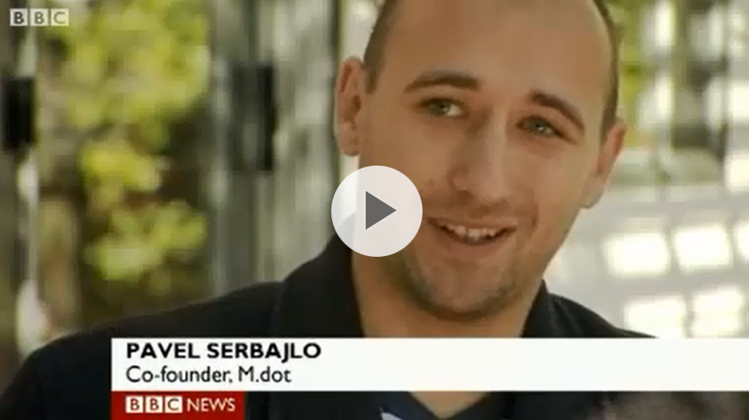
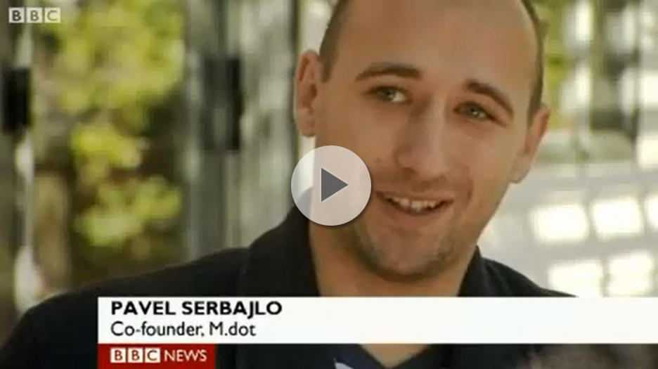

<!--
<section class="a-slide first" id="accelerate">
    <div class="overlay">
        <div class="inner">
            <h1>Blackbox Accelerate</h1>
        </div>
    </div>
</section>
-->
<section class="c-slide">
    <div class="inner">
		<div class="row">
			<h2>Blackbox Accelerate</h2>
			<!--<figure>
				
			</figure>-->
			
			<div style="border: 1px solid #dfdfdf;  background-color:#fff;
				-webkit-border-radius: 3px;
				-moz-border-radius: 3px;
			   border-radius: 3px;
				-webkit-box-shadow: 0 0 8px rgba(0, 0, 0, 0.13);
				   -moz-box-shadow: 0 0 8px rgba(0, 0, 0, 0.13);
						box-shadow: 0 0 8px rgba(0, 0, 0, 0.13);width:947px;height:536px;position:relative; margin-left:-478px; left:50%;">
			<!-- 1. The <iframe> (and video player) will replace this div tag. -->
			 <!--preloading-->
			 
			 
			 <!--document.getElementById('ytv').style.display='';<iframe id="ytv" style="position:relative; width:936px; height:525px;margin-left:5px;margin-top:5px;display:none;" src="http://www.youtube.com/embed/wI4GhV5MT9k" frameborder="0" allowfullscreen></iframe>-->
			 <!--<div id="player" style="margin-left:5px;margin-top:5px; z-index:9;"></div>-->
			<div id="player" style="margin-left:5px;margin-top:5px; z-index:9; "></div>
			
			

			</div>
			
				
			<script type="text/javascript">
			function clickVid() { 
				/*jQuery('#ytv').click();			*/
				jQuery("#player").html('<iframe id="ytv" style="position:relative; width:936px;  height:525px;" src="http://www.youtube.com/embed/wI4GhV5MT9k?autoplay=1" frameborder="0" allowfullscreen></iframe>');
				//alert("ok");
			}
			</script>
			
			<center><span style="font-style:italic; font-size:1.33em;"><br /> A customized, one year program for born global startups!</span></center>
			<br /><br />
			<div class="grid span1">
			<p>Blackbox Accelerate is an exclusive program offered to select Blackbox Connect graduates and founders referred by our trusted network of partners.</p>
			<p>If we believe we can help you, we commit to accelerate your growth for one year. With the value that we provide we earn a small equity in your company and align our interests long term.</p>
			
				<h4>Our Value Proposition</h4>
				<ul>
					<li>Curated match-making and connection to the most eager technology investors in the World. With over $10 billion of venture capital invested annually, Silicon Valley makes more investments in startups than any other region in the World. </li>
					<li>Customized analysis and advice regarding how to build and grow a technology business on a global scale.</li>
					<li>Introductions to strategic relationships. Blackbox team and network is most likely within one or two relationship degrees from the most relevant, experts, mentors, advisors, board members and thought leaders within your company's space.</li>
					<li>Recruitment advise and process to help you find the best talents to grow your team in the US.</li>
					<li>Over $50K in services provided by our partners to help you set up legal entity in the US, start you business banking, and scale your products with platform technologies such as Google Developers Startup Pack, Rackspace hosting spaces, etc. </li>
					<li>A home base to live and work from while you visit Silicon Valley in order to build your business relationship and get smart money to invest in you and your startup.  Blackbox is located downtown Palo Alto, only minutes away from the Wall Street of venture capital, Sand Hill Road and Stanford University.</li>
					<li>Join our exclusive international community of like-minded entrepreneurs and grow your business along with other born global startups. </li>
				</ul>
			</div>
		</div>
    </div>
</section>


